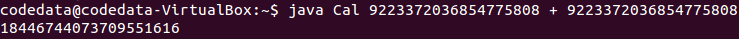
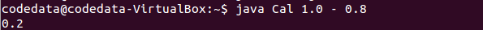
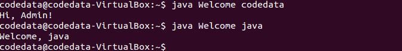
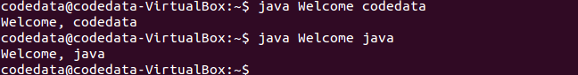

第二堂上課囉！在知道怎麼撰寫、執行第一個 Java 程式之後，接下來就要瞭解一下 Java 這個程式語言，只不過我們只剩五個小時，因而採取的方式是，在這一個小時很快地瀏覽過 Java 語言的重要基本元素，之後四個小時再從更多實際的範例中瞭解 Java 語言。
那麼，哪些東西才是語言中重要而基本的元素呢？Pascal 之父 Niklaus E. Writh 曾說過：
Algorithms + Data Structures = Programs
演算法與資料結構就等於程式，而一門語言提供的資料型態（Data type）、運算子（Operator）、程式碼封裝方式等，會影響演算法與資料結構的實作方式，因此這一堂對於 Java 語言講解的重點將選定在：- 型態系統、變數（Variable）與運算子（Operator）
- 方法（Method）、類別（Class）與套件（Package）
型態系統
雖然帶動與普及了物件導向的設計，不過 Java 本身並不是純綷的物件導向語言，像是就型態系統而言，Java 就並非每個值都是物件，就目前版本的 Java 而言，混合了兩個型態系統：基本型態（Primitive type）與物件型態（Object type）。Java 中的基本型態就是純綷的值，1 就是 1，0.2 就是 0.2，
true 就是 true，除此之外沒有其他資訊了，基本型態的存在，代表著過去程式設計的主要目的：進行數學運算。實際上，基本型態是 Java 這種命令式（Imperative）語言中存在的函數式（Functional）元素，因為 1 就是 1，你沒有辦法改變它，1 + 2 是一個數學操作，結果是產生新的值 3。
Java 支援物件導向，物件型態就是另一型態系統，物件是由一組相關的狀態，以及支援狀態的操作組成。對於基本型態，Java 亦有對應的包裹器（Wrapper）型態，可配合需要物件的場合。過去曾經討論過，在未來的版本中也許會拿掉 Java 中基本型態，只留下物件型態，不過現階段而言，基本型態與物件型態還是並存的，兩種都必須瞭解。
型態眾多，對於初學一門語言來說，或說對於學習 Java 語言來說，這邊將著重在以下幾個型態之介紹：
- 數值型態（Numeric type）
- 字元（Char）、字串型態（String type）
- 容器型態（Container type）
數值型態
在基本型態中，依需要的資料長度不同，整數可以使用byte（單位元組）、short（雙位元組）、int（四位元組）與 long（八位元組）型態。基本上，沒有特定需求（像是處理位元資料、時間戳記等），多半使用 int 整數。
如果僅寫下 1 這樣的實字（Literal），會是
int 型態；如果實字指定給變數，實字數值若在變數型態可裝載範圍內，則會將數值儲存至變數，如果不行就會編譯錯誤；
byte number1 = 1;
byte number2 = 128; // error: possible loss of precisionJava 中不會自動使用
long 來儲存較長的整數實字，如果想要寫下的實字是 long 型態，必須在實字後加上 L，透過以下這個例子會比較清楚：
long number1 = 12345678987654321L;
long number2 = 12345678987654321; // error: integer number too large: 12345678987654321
longint 裝不下 12345678987654321 這個實字，而不是 long 型態的變數 number2 裝不下 12345678987654321。
那麼超過
long 可容納範圍的數要怎麼表示？像是 9223372036854775808L 是會編譯錯誤的！Java 使用 java.math.BigInteger 來解決。例如要表示數學運算 9223372036854775808 + 9223372036854775808 的結果，可以如下：
import java.math.BigInteger;
import static java.lang.System.out;
public class Cal {
public static void main(String[] args) {
BigInteger x = new BigInteger(args[0]);
BigInteger y = new BigInteger(args[2]);
switch(args[1]) {
case "+": out.println(x.add(y)); break;
case "-": out.println(x.subtract(y)); break;
case "x": out.println(x.multiply(y)); break;
case "/": out.println(x.divide(y));
}
}
}
switchEnum），這個程式可以進行簡單的加、減、乘、除運算，像是…
{kind=link}

如果需要將基本型態包裝為物件型態，可以直接使用對應的
Byte、Short、Integer 與 Long 包裹器（Wrapper）類別，像是：
Integer x = 10;
Integer y = 20;
Integer z = x + y;這當中有一些語法蜜糖，目的在讓你使用這些包裹器類別時，如同使用基本型態一樣的方便。
在基本型態中，依需要的資料精確度不同，浮點數可以使用
float（四位元組） 與 double（八位元組）兩個型態。在程式中寫下像是 0.3 這樣的浮點數實字，會使用 double 型態，因此 …
double number1 = 0.3;
float number2 = 0.3; // error: possible loss of precision如果想要使用
float 型態，有兩種方式，一是在實字上指定 F，表示這個浮點數要使用 float，另一種方式就是用所謂的轉型（Cast）語法叫編譯器別囉嗦：
float number1 = 0.3F;
float number2 = (float) 0.3;在數值前加上一個型態限定，通常被稱之為轉型，實際上，這就是關閉編譯器在此處的型態檢查，這樣編譯器就會乖乖地完成編譯，只不過你如果要編譯器在編譯時別那麼囉嗦，那執行時期如果
double 的值真的超過了 float 變數可容納的範圍，那就只能硬裝進去了，也就是多出來的位元組會被切掉，也就是會有精度遺失問題。
多數 CPU 與浮點運算器多採用 IEEE754 浮點數運算（IEEE 754 floating-point arithmetic），某些浮點數本身就有誤差，這是每個程式人都應該知道的事。像是 1.0 - 0.8 在程式中不會是 0.2，是電腦科學中違反數學的例子之一：
System.out.println(1.0 - 0.8); // 顯示 0.19999999999999996如果你需要精確度，程式中不應當使用浮點數來直接進行運算，尤其是要避免「算錢用浮點，遲早被人扁」的可能性發生，在需要浮點數精度的時候，Java 中可以使用
java.math.BigDecimal，例如：
import java.math.BigDecimal;
import static java.lang.System.out;
public class Cal {
public static void main(String[] args) {
BigDecimal x = new BigDecimal(args[0]);
BigDecimal y = new BigDecimal(args[2]);
switch(args[1]) {
case "+": out.println(x.add(y)); break;
case "-": out.println(x.subtract(y)); break;
case "x": out.println(x.multiply(y)); break;
case "/": out.println(x.divide(y));
}
}
}這個例子不過是將前一個計算大整數的程式，把
BigInteger 改為 BigDecimal，以支援浮點數精度，一個使用的例子是…
{kind=link}

字元、字串型態
字串是由字元組成，在 Java 中要表示字元，必須使用單引號來包裹，像是'A'、'程' 就表示字元，型態是 char 基本型態。Java 支援 Unicode，內部實作採用 UTF-16 Big Endian，也就是說，無論中英文字元，都會使用兩個位元組，這也就是為何在入門階段，不用特別在意原始碼文字編碼問題處理的原因。由於單引號被用來表示一個字元實字，因此如果想要表示單引號字元的話，就必須使用略過（Escape）字元 \，也就是 '\''，而為了表示略過字元，則必須使用 '\\'。
如果要表示一串字元，也就是字串的話，Java 中使用雙引號來包裹，像是
"codedata"、"程式" 就表示字串，當然，如果字串中必須表示雙引號，也必須使用略過字元，像是 "\"Code\" & \"Data\""。
Java 中的字串不可變（Immutable），你無法改變已建立的字串內容，字串是
String 類別的實例，因此可以使用 String 類別上定義的各個方法，像是以 length 方法得知字串中的字元個數，使用 contains 得知字串是否包括某個子字串，使用 substring 來進行字串切割等，要進行字串的串接，可以直接使用 +。
import static java.lang.System.out;
public class Main {
public static void main(String[] args) {
String name = "codedata";
out.println(name.length()); // 8
out.println(name.contains("coded")); // true
out.println(name.charAt(3)); // e
out.println(name.substring(2, 5)); // ded
out.println(name + name); // codedatacodedata
char[] characters = name.toCharArray();
for(char ch : characters) {
out.printf("%c ", ch); // c o d e d a t a
}
}
}在 Java 中，只有陣列與具有
Iterable 行為的物件，才能運用 for-each 語法，因而範例中使用 toCharArray 取得字元陣列，再透過 for-each 語法逐一取得陣列中的字元並顯示。System.out 的 printf 方法可以進行字串格式化再輸出，%c 佔位符號表示這邊將會有個字元。String 有個 static 方法 format，也可以進行字串格式化，傳回新的字串。例如：
String desc = String.format("(%d %.2f %s)", 1, 99.3, "codedata");
System.out.println(desc); // (1 99.30 codedata)格式化字串時所需要的語法，可以參考 Format String syntax。 談到這邊該注意的是，Java 中若要比較兩個基本型態，可以使用
==，然而要比較兩個物件的狀態是否相同，則需透過物件上定義的 equals 方法。例如：
import static java.lang.System.out;
public class Welcome {
public static void main(String[] args) {
if(args[0].equals("codedata")) {
out.println("Hi, Admin!");
} else {
out.printf("Welcome, %s%n", args[0]);
}
}
}以下是這個程式原本想要的情況：
{kind=link}

然而，如果將程式中
if(args[0].equals("codedata")) 改為 if(args[0] == "codedata")，結果就會是如下，再也看不到親切的站長問候：
{kind=link}

其實，
== 的本質上其實並沒有改變，它還是僅比較兩邊的值，如果 == 兩邊是基本型態，比較兩邊值是否相等，如果 == 兩邊是物件，也是比較兩邊值是否相等，只不過這個值不是指物件的狀態，而是指參考（Reference）。
本來嘛！要比較兩個物件的狀態，該怎麼比，本來就該定義，Java 中就是使用
equals 方法來定義，只不過 Java 中使用 == 比較物件時，不會像有的程式語言會自動去呼叫 equals 方法，在 Java 中，得明確地呼叫 equals 來比較物件狀態。
有關物件相等性更多的說明，可以參考本站 物件相等性（上）的文章，至於容器型態及
if、for、while 等流程語法，會在下篇文章中說明。